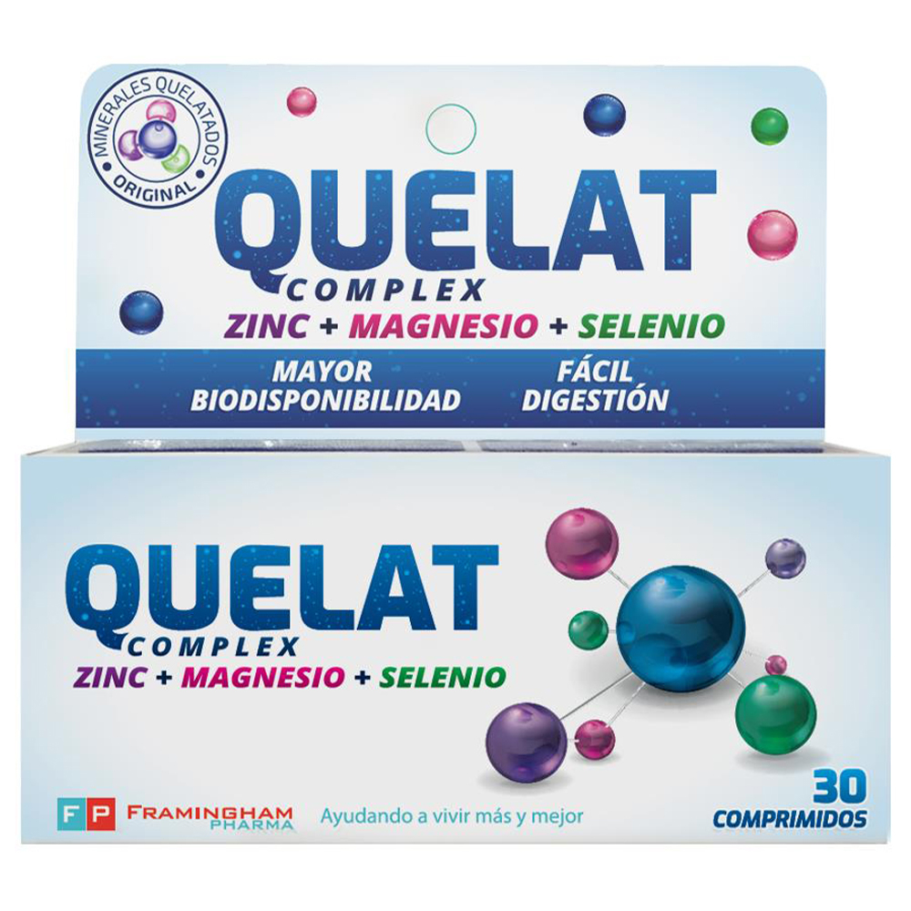
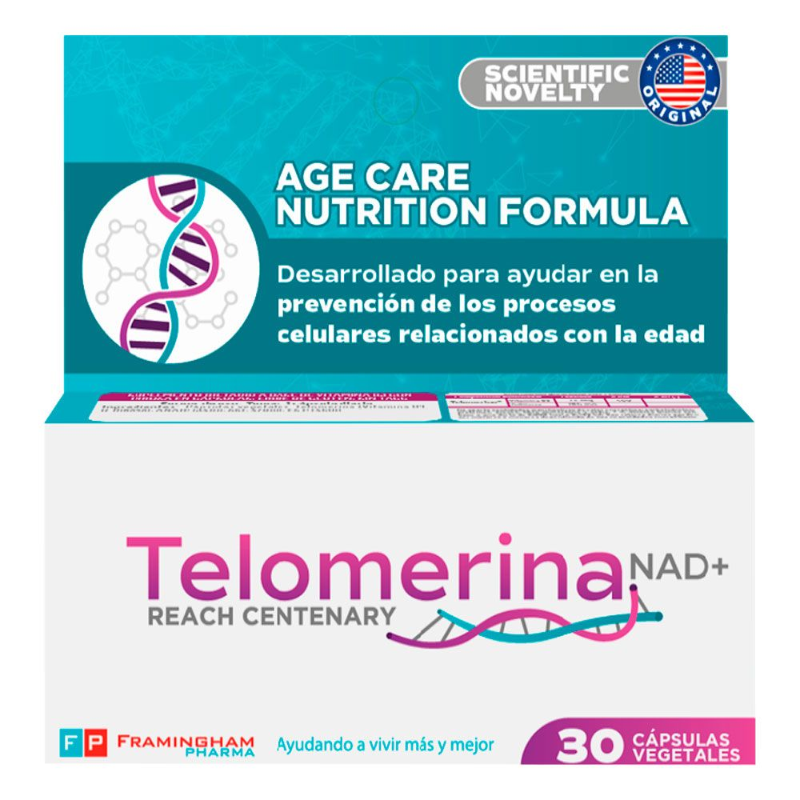

QUELAT es un desarrollo innovador, científico y tecnológico que ha permitido transformar los minerales inorgánicos en una forma orgánica (quelatados), facilitando la absorción de los minerales.

Favorece la circulación sanguínea y regula la presión arterial, por lo que ayuda a reducir el riesgo de enfermedades cardiovasculares. CAPSKRILL ayuda a prevenir enfermedades del sistema nervioso y a mejorar los síntomas de enfermedades inflamatorias.

Telomerina NAD+® es un suplemento dietario con la formulación de mayor potencia y eficiencia conocida, clínicamente validada para aumentar los niveles de NAD (Nicotinamida adenina dinucleótido) en todo el organismo.

Gravitón M&M es un suplemento dietario de 14 vitaminas y 13 minerales esenciales, que no produce el organismo y son fundamentales para su correcto funcionamiento diario.